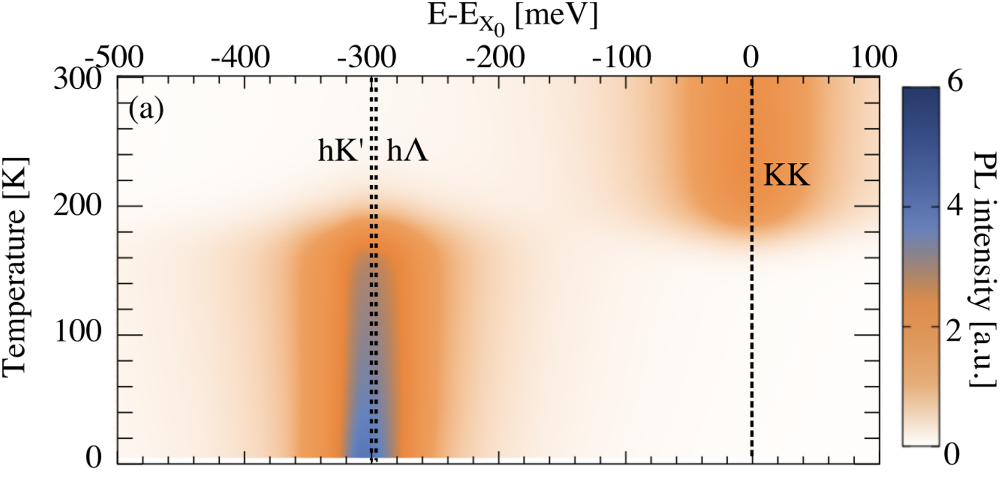
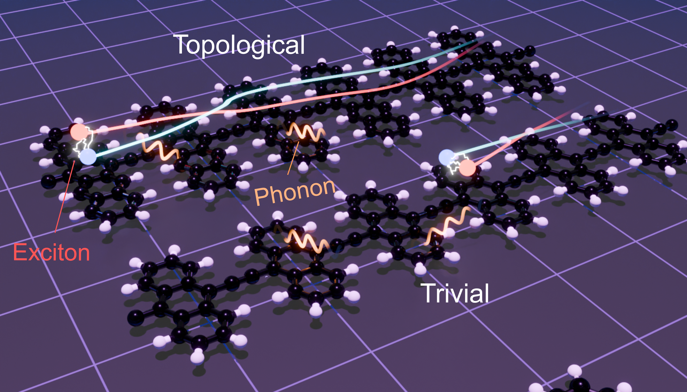

Excitons & optical response
Modelling exciton formation, fine structure, quantum emission as well as linear and nonlinear optical responses in semiconducting materials.

Low-dimensional & hybrid materials
Studying TMDs, organic semiconductors, layered perovskites and van der Waals heterostructures, including interlayer coupling, moiré effects and hybrid excitons.

Phonons, dynamics & transport
Connecting electron–phonon and exciton–phonon interactions to track how quantum particles evolve in space, time and energy.

Quantum phenomena
Using topology and quantum geometry where they provide useful microscopic insight into excitonic states, transport and optoelectronic response.